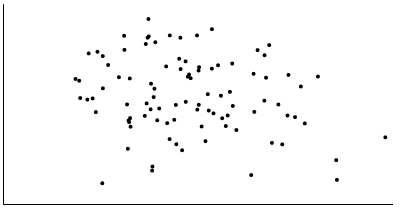
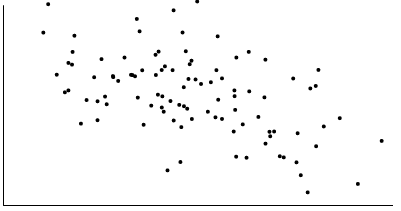

<!DOCTYPE html>
<html>
  <head>
    <title>VCL: JND Experiment</title>

    <!-- Scripts: -->

    <!-- JsPsych: -->
    <script src="jspsych-6.0.3/jspsych.js"></script>
    <script src="jspsych-6.0.3/plugins/jspsych-html-keyboard-response.js"></script>
    <script src="jspsych-6.0.3/plugins/jspsych-image-keyboard-response.js"></script>
    <script src="jspsych-6.0.3/plugins/jspsych-external-html.js"></script>
    <script src="jspsych-6.0.3/plugins/jspsych-external-html-keyboard-response.js"></script>

    <!-- Local scripts: -->
    <script type="text/javascript" src="scripts/gaussian_distribution_generator.js" ></script> 
    <script type="text/javascript" src="scripts/adjust_correlation.js" ></script>
    <script type="text/javascript" src="scripts/jnd_experiment_helpers.js" ></script>

    <!-- Math.js: -->
    <script src="https://unpkg.com/mathjs@4.4.2/dist/math.min.js"></script>

    <!-- D3: -->
    <script src = "https://d3js.org/d3.v4.min.js"></script>
    
    <!-- Style: -->
    <link href="jspsych-6.0.3/css/jspsych.css" rel="stylesheet" type="text/css"></link>
    <link rel="stylesheet" href="https://cdnjs.cloudflare.com/ajax/libs/font-awesome/4.7.0/css/font-awesome.min.css">

    <!-- <link rel="stylesheet" href="styles.css"> -->

  </head>

  <body></body>

  <script>

    // Constants -----------------------------------------------

    // Condition-related constants:
    const MIN_CORRELATION = 0.0
    const MAX_CORRELATION = 1.0
    const BASE_CORRELATION = 0.3

    const NUM_POINTS = 100;
    const ERROR = 0.0001;
    const NUM_SD = 2.5;
    const SD = 0.2;
    const MEAN = 0.5;
    const INITIAL_DIFFERENCE = 0.1;
    const CONVERGE_FROM_ABOVE = true;
    const MAX_STEP_SIZE = 0.01;


    // Experiment-related variables:
    var PREV_RESPONSE_IS_CORRECT;
    var PREV_ADJUSTED_CORRELATION;    // @ TODO: Find way to embed this into the data. 
                                      // Variables that keep track of the PREVIOUS trial's
                                      // adjusted correlation and whether response was correct.

    var timeline = [];
    const localhost = "http://localhost:8080";

    // Variables used to generate D3 jnd_trial_display.html:
    var left_coordinates;
    var right_coordinates;

    var multiplier = 1; // Sets how much the data should be scaled by.

    // Welcome trial ------------------------------------------

    var welcome = {
      type: 'html-keyboard-response',
      stimulus: '<div align = "center">' + '</img> <br>' +
                'This is a <b>Proof of Concept</b> for a <b>Correlation JND Experiment</b>.' + 
                '<p><font size = 15>Press any key to begin.<p></font>' +
                '</div>',
      data: {type: 'instruction'}
    };
    timeline.push(welcome);

    // Instructions --------------------------------------------

    var instructions = {
      type: "html-keyboard-response",
      stimulus: "<div align = 'center'> <p>In this experiment, two graphs will appear side-by-side." + 
          "<br> Indicate which graph is more correlated by pressing the Z or M key. </p><p>" +
          "<div style='width: 900px;'>"+
          "<div style='float: left;'></img>" +
          "<p class='small'><strong>Press the Z key</strong></p></div>" +
          "<div class='float: right;'></img>" +
          "<p class='small'><strong>Press the M key</strong></p></div>" +
          "</div>"+
          "<p>Press any key to continue.</p></div>"
    };

    var ready = {
      type: 'html-keyboard-response',
      stimulus: "<div align = 'center'> <font size = 20><p>Ready?<p>" + "<p><b>Press any key to begin.</b></p></font></div>",
      data: {type: 'instruction'}
    }

    var instruction_trials = {
      timeline: [instructions, ready]
    };

    timeline.push(instruction_trials);

    // Experiment ---------------------------------------------

    // Feedback trial
    var feedback = {
      type: 'html-keyboard-response',
      choices: jsPsych.NO_KEYS, //No responses will be accepted as a valid response.
      trial_duration: 500,
      data: {type: 'feedback'},
      stimulus: function(){
        var last_trial = JSON.parse(jsPsych.data.getLastTrialData().json());
        var last_trial_correct = last_trial[0]["correct"];

        if (last_trial_correct){
          return '<p><i class="fa fa-check-circle" style="font-size:50px; color:green; margin-right: 10px;"></i>' + 
                 '<font style="font-size:50px; color:green">Correct!<p></font>'
        }
        else{
          return '<p><i class="fa fa-close" style="font-size:50px; color:red; margin-right: 10px;"></i>' + 
                 '<font style="font-size:50px; color:red;"">Incorrect!<p></font>'
        }
      }
    };

    // JND trial
    var jnd = {
      type:'external-html-keyboard-response',
      url: localhost + "/jnd_trial_display.html",
      choices:['z', 'm'], 
      execute_script: true,
      response_ends_trial: true,
      data: {
        type: 'jnd',
        left_correlation: '',
        right_correlation: '',
        correct: ''
      },
      on_start: function(jnd){ // NOTE: on_start takes in trial var 

        var last_trial = JSON.parse(jsPsych.data.getLastTrialData().json());
        var adjusted_correlation;

        // For the first trial, we need to initialize the adjusted correlation:
        if (last_trial[0]["type"] == "instruction"){
          adjusted_correlation = initializeAdjustedStatistic(CONVERGE_FROM_ABOVE, INITIAL_DIFFERENCE, 
                                  BASE_CORRELATION, MAX_CORRELATION, MIN_CORRELATION);
        }
        else{
          adjusted_correlation = getNextAdjustedStatistic(PREV_RESPONSE_IS_CORRECT, CONVERGE_FROM_ABOVE,
                                  PREV_ADJUSTED_CORRELATION, MIN_CORRELATION, MAX_CORRELATION, 
                                  BASE_CORRELATION, INITIAL_DIFFERENCE, MAX_STEP_SIZE);
        }

        PREV_ADJUSTED_CORRELATION = adjusted_correlation;

        var base_coordinates = generateDistribution(BASE_CORRELATION, ERROR, NUM_POINTS, NUM_SD, MEAN, SD);
        var adjusted_coordinates = generateDistribution(adjusted_correlation, ERROR, NUM_POINTS, NUM_SD, MEAN, SD);

        var result = randomizePosition(jnd, base_coordinates,
                                       adjusted_coordinates, BASE_CORRELATION, adjusted_correlation);

        left_coordinates = result.left;
        right_coordinates = result.right;   

        console.log("[RIGHT] Correlation: " + jnd.data.right_correlation);
        console.log("[LEFT] Correlation: " + jnd.data.left_correlation);

      },
      on_finish: function(data){ // NOTE: on_finish takes in data var 

        PREV_RESPONSE_IS_CORRECT = responseIsCorrect(data);

        console.log("RESPONSE: " + data.correct);
      } 
    };
    
    // Push trials onto timeline 
    var trials = {
      timeline: [jnd, feedback],
      repetitions: 5
    };

    timeline.push(trials);

    // Start experiment -----------------------------------------
    jsPsych.init({
        timeline: timeline,
        on_finish: function(){ 
            jsPsych.data.displayData();
        }
    });

  </script>
</html>
